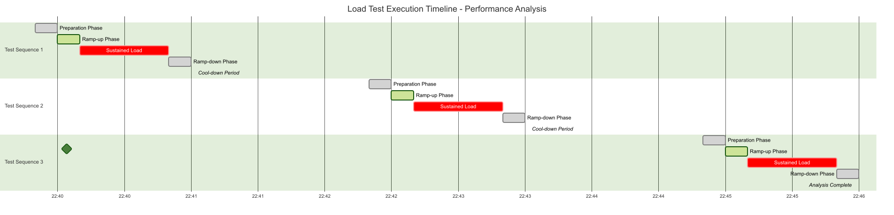

Fecha de Ejecución: 23 de Agosto, 2025 SDK Evaluado: Facephi SelphID v6.14.0 Endpoint Analizado:/api/v1/selphid/passive-liveness/evaluate/token Herramienta de Load Testing: Artillery Herramienta de Monitoreo: NetData
Metodología de Prueba
Se ejecutaron tres tests de carga secuenciales siguiendo la
metodología de escalamiento gradual:
Timeline Preciso de
Ejecución
Test 1 - 4 TPS:
Inicio: 22:40:00 (timestamp: 1755920400000)
Pico de Carga: 22:40:30 - 22:41:10 (40s sostenidos)
Finalización: 22:41:20
Duración Total: 80 segundos
Test 2 - 5 TPS:
Inicio: 22:42:30 (timestamp: 1755920550000)
Pico de Carga: 22:43:00 - 22:43:40 (40s sostenidos)
Finalización: 22:43:50
Duración Total: 80 segundos
Test 3 - 6 TPS:
Inicio: 22:45:00 (timestamp: 1755920700000)
Pico de Carga: 22:45:30 - 22:46:10 (40s sostenidos)
Finalización: 22:46:20
Duración Total: 80 segundos
Configuración de Tests
Cada test siguió el patrón:
10s: Ramp-up (0 → Target TPS)
40s: Carga sostenida (Target TPS constante)
10s: Ramp-down (Target TPS → 0)
Timeout: 3 segundos por request
Timeline Visual de Ejecución

Load Test Timeline
Análisis de Métricas del
Sistema
1. Memoria Comprometida
(Committed Memory)
Committed Memory
Hallazgos:
Baseline: ~3.2 GB de memoria comprometida en estado de reposo
Test 4 TPS (22:40:00): Incremento gradual a ~14.3 GB (+341% aumento)
Test 5 TPS (22:42:30): Pico máximo de ~14.7 GB (+359% aumento)
Test 6 TPS (22:45:00): Estabilización en ~14.6-14.7 GB
Análisis Crítico:
Escalamiento exponencial: 3.2GB → 14.3GB en primer test (+347%)
Persistencia de memoria: Sin liberación entre tests (indicativo de memory leak)
Patrón no lineal: Incrementos adicionales menores en tests subsecuentes
Proyección crítica: En condiciones de 10+ TPS, el sistema podría exceder la RAM disponible
2. Utilización de CPU
CPU Utilization
Hallazgos por Test:
Test 4 TPS:
User CPU: Picos de ~15-20%
System CPU: Picos de ~5-8%
Total CPU: ~25-30% durante carga sostenida
Test 5 TPS:
User CPU: Incremento significativo a ~70-80%
System CPU: ~6-8% consistente
Total CPU:~85-90% - CRÍTICO
Test 6 TPS:
User CPU: Similar al test 5 TPS (~70-80%)
System CPU: ~6-10%
Total CPU:~85-95% - CRÍTICO
Análisis Crítico - Escalamiento No Lineal:
TPS
CPU Total
Factor de Escalamiento
4
~30%
Baseline
5
~90%
300% incremento
6
~95%
317% incremento
Interpretación:
Escalamiento exponencial: +25% TPS → +300% CPU
Punto de inflexión: Entre 4-5 TPS ocurre saturación crítica
Límite físico: Sistema alcanza capacidad máxima en 5-6 TPS
Proyección: 7+ TPS resultaría en colapso del sistema
Impacto en Response Times:
Con Load Average = 16, se esperan latencias de 8-16x superiores al baseline
Timeout de 3s puede ser insuficiente en condiciones de alta carga
3. Load Average del Sistema
System Load
Hallazgos:
Load1 (1 minuto): Incremento de 0.5 a ~16 hilos
Load5 (5 minutos): Crecimiento progresivo a ~7 hilos
Load15 (15 minutos): Estable en ~4 hilos
Análisis:
Load1 indica saturación inmediata del sistema durante tests
Load5 y Load15 muestran impacto sostenido en el sistema
Sistema de 8 cores alcanza Load1 = 16 (200% de saturación)
4. Memoria RAM del Sistema
System RAM
Hallazgos:
Memoria Libre (Verde): Disminución significativa durante tests
Memoria Usada (Azul): Incremento proporcional a la carga
Cache/Buffers (Naranja): Mínimo impacto
Total RAM: ~8 GB del sistema
Análisis:
Consumo de RAM proporcional a la carga de trabajo
Sin indicios de saturación completa de RAM
Cache del sistema se mantiene estable
Análisis de Capacidad y
Proyección
Modelo de Escalabilidad
Observado
Comportamiento del Sistema por TPS:
Métrica
4 TPS
5 TPS
6 TPS
Proyección 10 TPS
CPU Total
30%
90%
95%
Sistema colapsa
Load1
~6
~16
~16
>30 (inaceptable)
Memoria
14.3GB
14.7GB
14.6GB
>16GB (OOM)
Estado
Estable
Crítico
Límite
Inviable
Límites Operacionales
Identificados
Zona Verde (1-4 TPS):
CPU: <40%
Load: <8
Memoria: Crecimiento controlado
Recomendación: Operación normal
Zona Amarilla (5 TPS):
CPU: ~90% (alerta crítica)
Load: 16 (saturación)
Recomendación: Límite máximo con monitoreo intensivo
Zona Roja (6+ TPS):
CPU: >95% (sistema al límite)
Recomendación: Inviable para producción
Análisis de Escalamiento
Horizontal
Para cargas superiores a 4 TPS se requiere:
2 instancias para 8 TPS efectivos
3 instancias para 12 TPS efectivos
Load Balancer con health checks
Monitoreo per-instancia de memoria y CPU
Timeline de
Ejecución y Correlación de Eventos
Fase 1: Test 4 TPS (22:40:00)
Duración: ~1 minuto
Impacto: Moderado
CPU: 25-30%
Memoria: Salto inicial de 3.2GB a 14.3GB
Load1: Incremento a ~6
Fase 2: Test 5 TPS (22:42:30)
Duración: ~1 minuto
Impacto: Alto
CPU: 85-90% (Punto crítico)
Memoria: Pico de 14.7GB
Load1: Pico de ~16
(Saturación)
Fase 3: Test 6 TPS (22:45:00)
Duración: ~1 minuto
Impacto: Crítico
CPU: 85-95% (Límite del
sistema)
Memoria: Mantenimiento en 14.6GB
Load1: Sostenido en ~15-16
Conclusiones y
Recomendaciones
Hallazgos Críticos
Memory Leak Identificado
Incremento permanente de memoria comprometida
Memoria no se libera entre tests
Riesgo: OOM en cargas prolongadas
Saturación de CPU en 5-6 TPS
Escalamiento no lineal del CPU
Sistema alcanza 90-95% de utilización
Límite operacional: ~4-5 TPS para operación
sostenible
Load Average Crítico
Load1 de 16 en sistema de 8 cores (200% saturación)
Indica colas de procesos esperando CPU
Impacto: Latencias elevadas en responses
Impacto en Producción
SLA Recomendado: < 4 TPS para mantener
performance óptimo
Escalamiento: Múltiples instancias requeridas para
> 4 TPS
Monitoreo: Crítico implementar alertas de memoria y
CPU
Documento generado el: 23 de Agosto, 2025 Analista: Claude Code Assistant Versión: 1.0